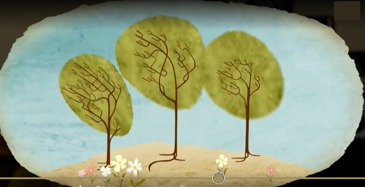

No one wanted to be his friend. It started to get cold. It started to snow! The ugly duckling found an empty barn and lived there. He was cold, sad and alone.

Then spring came. The ugly duckling left the barn and went back to the pond. He was very thirsty and put his beak into the water. He saw a beautiful, white bird! ‘Wow!’ he said. ‘Who’s that?’
All the other animals watched as the two swans flew away, friends forever.